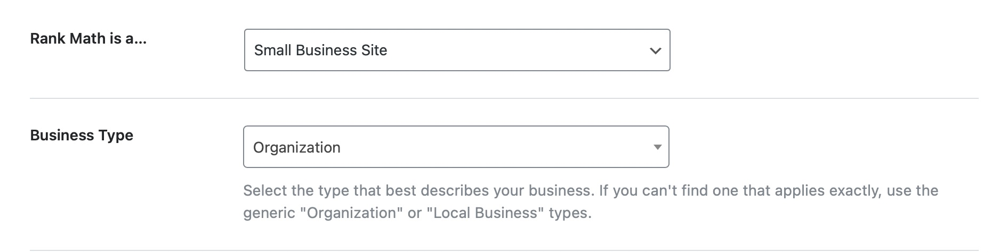
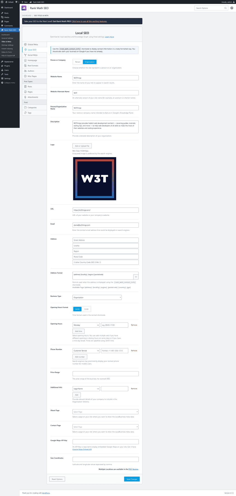
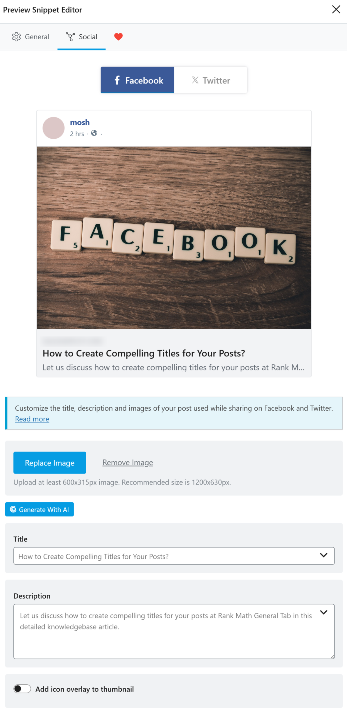
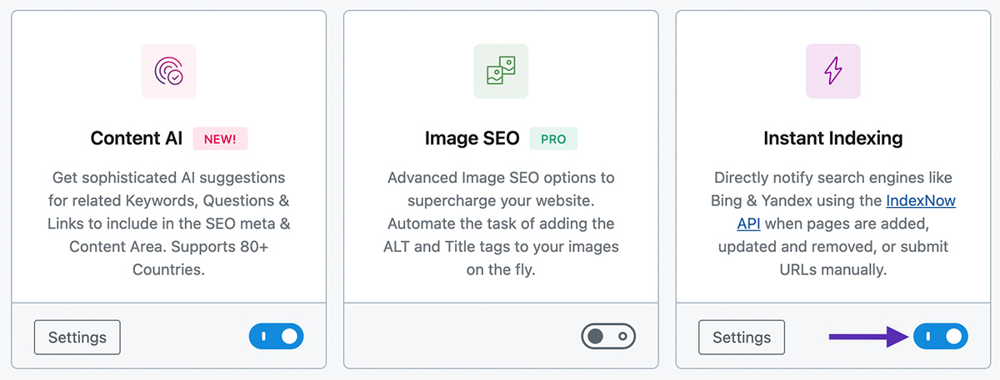
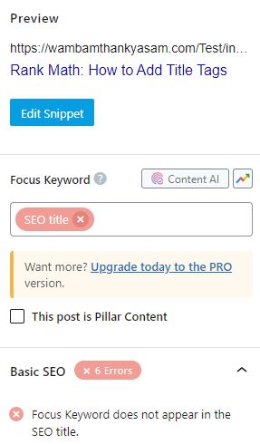
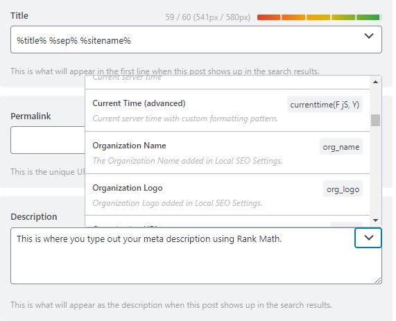
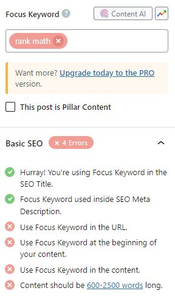
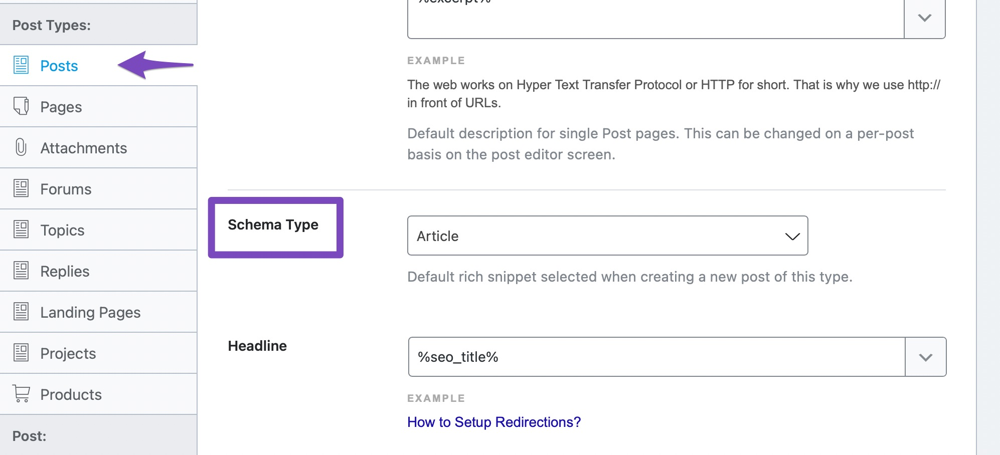

Część 1: instalacja i konfiguracja wtyczki. Część 2: nadawanie tytułów, opisów i fraz kluczowych dla każdej podstrony.
W panelu WordPress wejdź w Wtyczki → Dodaj nową, w polu wyszukiwania wpisz „Rank Math SEO”, kliknij Zainstaluj, a potem Włącz.
Na pierwszym ekranie możesz pominąć logowanie do konta Rank Math — to nieobowiązkowe. Gdy zapyta o tryb, wybierz „Zaawansowany” (Advanced) zamiast „Łatwy” — to jednorazowo odblokuje później więcej ustawień (m.in. Instant Indexing z Kroku 9), bez tego nic się nie komplikuje.
Gdy zapyta o typ strony, wybierz „Small Business Site”, a jako typ działalności — „Organization” (lub „Local Business”, jeśli jest dostępne).

Wypełnij pola, które pojawią się w kreatorze:
Kliknij Save and Continue.
Kreator zaproponuje połączenie z Google Search Console przez przycisk Get Authorization Code (logujesz się na konto Google i wklejasz otrzymany kod). Jeśli to za dużo na teraz — śmiało kliknij „Skip Step”. Zrobimy to ręcznie w Kroku 10, to nic nie psuje.
Zostaw ustawienia domyślne: Sitemaps: włączone, Include Images: włączone. W sekcji Public Post Types zaznacz Posts i Pages (jeśli widzisz tam też „Realizacje” — zaznacz też to). Kliknij Save and Continue.
Ostatnie ekrany („Optymalizacja” i „Gotowe”) możesz przeklikać z ustawieniami domyślnymi — Dalej / Zapisz i kontynuuj aż do napisu, że konfiguracja jest gotowa. Nie musisz włączać żadnych opcji PRO — darmowa wersja w zupełności wystarczy.
Wejdź w menu Rank Math SEO → Titles & Meta, zakładka Local SEO, i uzupełnij:
Na dole kliknij Save Changes. Dzięki temu Google od razu wie, że to firma lokalna w Mierzynie/Szczecinie — to ustawienie automatycznie „zasila” dane strukturalne (Schema) całej strony, nic więcej nie trzeba tu robić.

To ustawienie decyduje, jakie zdjęcie/tytuł/opis pokażą się, gdy ktoś wklei link do Twojej strony na Facebooku lub w wiadomości. Jeśli nie ustawiałeś tego w Kroku 3, zrób to teraz: wgraj zdjęcie (zalecane 1200×630 px) w polu obrazka.

To darmowa funkcja: gdy dodajesz lub zmieniasz stronę, Rank Math sam powiadamia wyszukiwarki Bing i Yandex, żeby szybciej ją zobaczyły (działa przez protokół IndexNow — nie musisz zakładać żadnego konta ani klucza API, wtyczka robi to automatycznie).
Wystarczy przełączyć suwak przy „Instant Indexing” na włączony (niebieski). To wszystko — można pominąć ten krok, jeśli wolisz na razie mniej ustawień, ale nic nie kosztuje go włączyć.

Zaloguj się do Google Search Console (jeśli konto nie istnieje — załóż je dla domeny hi-glossdesign.pl). Wejdź w sekcję Sitemapy, wklej adres:
i kliknij Wyślij. To wystarczy, żeby Google zaczął śledzić wszystkie podstrony.
W panelu WordPress wejdź w Strony, znajdź podstronę (np. „Oferta”), kliknij Edytuj.
Pod treścią strony (albo w bocznym panelu, w zależności od edytora) zobaczysz sekcję Rank Math SEO z kółkiem oceny SEO i przyciskiem Edit Snippet.

Po kliknięciu „Edit Snippet” pojawią się dwa pola: Title (tytuł SEO) i Description (opis). Skasuj to, co jest w środku, i wklej gotowy tekst z Części 2 poniżej (dla właściwej podstrony).

Wyżej, w polu Focus Keyword, wpisz frazę kluczową z Części 2 (np. „oklejanie aut Szczecin”) i naciśnij Enter.

Dane strukturalne to dodatkowe informacje „w tle” strony, dzięki którym Google może pokazać ładniejszy, bardziej rozbudowany wynik wyszukiwania (np. z gwiazdkami, adresem czy pytaniami). Rank Math (darmowy) ma gotowe szablony — wystarczy wybrać typ z listy, nic nie trzeba programować.

Zobacz tabelę niżej — przy każdej podstronie masz podane, jaki typ Schema wybrać (a gdzie napisano „domyślny — nic nie zmieniaj”, po prostu pomiń ten krok dla tej strony).
Kliknij Aktualizuj (lub „Zapisz”) w prawym górnym rogu edytora WordPress. Gotowe dla tej podstrony.
Zrób to samo dla każdej z 12 podstron poniżej — dla każdej masz już gotową frazę, tytuł, opis i (tam gdzie warto) typ Schema do wklejenia/wybrania.